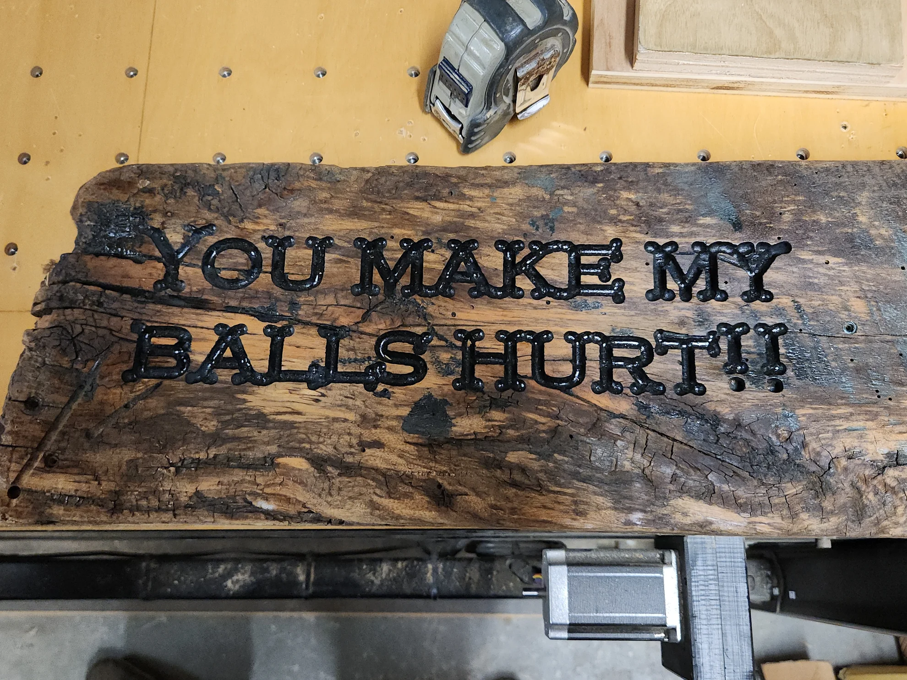

CNC / WOODWORK
Personalized signs
Shop signs, names, addresses, plaques and custom messages.
CNC / Signs / Custom pieces
Engraved wood signs, custom lettering and CNC-cut parts. The finished pieces are shown below.
CUSTOM ENGRAVING
Shop signs, names, lettering and custom artwork cut into wood.
Provide the wording or artwork, approximate dimensions, desired wood and intended use. We can review what the machine and material allow.
CNC project inquiry ↗
CNC SERVICES
Shop signs, names, addresses, plaques and custom messages.
Machined letters, carved patterns and details, within machine capacity.
Custom wood shapes, cutouts and project components.
CNC PROJECT PHOTOS
Additional finished signs will be added to the gallery as photos are available.
FOR AN ACCURATE QUOTE
Text, sketch or reference artwork and the required layout.
Size, number of pieces, wood choice and required finish.
Interior or exterior use, mounting requirements and preferred schedule.
PROJECT INQUIRIES
Send the wording, dimensions and a sketch or reference image if you have one.